More accurate spatial refinement is another advantage to increasing the spatial accuracy of vortex methods by increasing the number of internal degrees of freedom. In CCSVM, a Gaussian blob which has spread beyond a prescribed spatial resolution l would be replaced an overlapping configuration of ``thinner'' blobs. The new configuration would approximate the original element in the sense that it would conserve the zeroth, first and second moments. It should be noted that it only conserved a composite second moment (
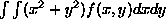
) rather than the individual second moments in the cardinal directions. Furthermore, the limited number of internal degrees of freedom required each configuration to split into four to preserve symmetries in the cardinal directions. In the case of elliptical Gaussian basis functions, it is possible to conserve all second moments while only requiring a configuration of two elliptical Gaussian elements. Naturally, these elements are aligned along the semimajor axes of the element to be refined. Without loss of generality, we shall assume that the zeroth (i=0) element will be refined and that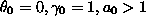
. Using equation (3.9), we wish to replace
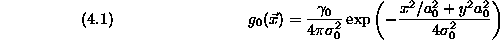
with the configuration
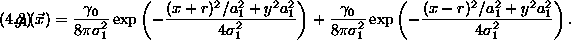
The appropriate convergence parameter controlling the refinement process is
 process where . Therefore, to
conserve all zeroth, first and second moments, one must require that
process where . Therefore, to
conserve all zeroth, first and second moments, one must require that
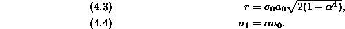
Similar to the refinement process for CCSVM, the elliptical refinement
process becomes more accurate as  [22].
[22].
Unlike CCSVM wherein refinement in the zero-convection limit can be studied in great detail, an exact solution to (3.12) even for a simple linear flow elude the author. However, using slightly different analysis, we can recover a strong uniform estimate for the total induced error.
To begin, one must determine how many times a computational element will be refined during its lifetime
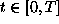
. From the system (3.12), we see that
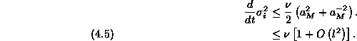
Since a given element's width goes from to , splits and then repeats the cycle, we see that the total number of refinement events is
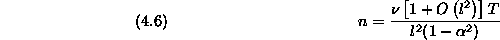
However, for values of  moderately close to unity,
moderately close to unity,
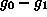
achieves its extreme value at the origin so that
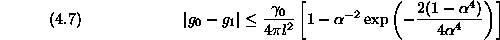
A Taylor expansion of the right-hand side yields
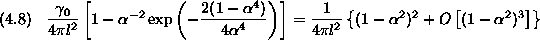
This uniform error is exponentially localized so that
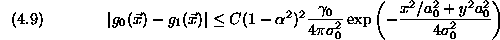
However, the refinement process is repeated n times, and the cumulative error must analyzed.
Calculating upper bounds on refinement errors under all possible circumstances, that is all possible velocity fields, would be exhaustive and crude. However, a model problem similar to that of using scalar test problems for finite difference solutions for ordinary differential equations can correspondingly meaningful error estimates. To review, studying the stability of a finite difference scheme for all possible ordinary differential equations is exhaustive and unreasonable. However, the linear behavior of the discretized system can be discerned by analyzing the finite difference method's capacity to solve a ``scalar test equation,''
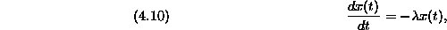
where  is an eigenvalue which can represent the linearization
of the problem of interest near some value x(T).
By studying this system, one can determine what eigenvalues,
is an eigenvalue which can represent the linearization
of the problem of interest near some value x(T).
By studying this system, one can determine what eigenvalues,  ,
correspond to stable regions for the discrete system. One would then have
some insight into the suitability of a particular discretization for a
particular problem.
,
correspond to stable regions for the discrete system. One would then have
some insight into the suitability of a particular discretization for a
particular problem.
Similarly, we propose a linearized flow to study the behavior of the given refinement scheme. One can assume that
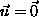
because drift will not affect diffusion and refinement and, without losing much generality, that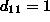
,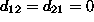
). Adding rotation to the linearization would only yield a rotating system with the same qualities. Initially, one begins with a blob at the origin aligned with the cardinal axes and allow it to evolve with time. The width will grow from to and then refinement shall occur. For a given l, we choose a so that when and when . Of course,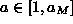
. It is always possible to choose such an because the aspect ratio grows monotonically in this example.In this example, we see that elements spread, split and repeat, forming a collection of identical elements along the x-axis. Without loss of generality, we shall study cases when n is even. The elements lie on mesh with width 2 r at positions
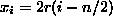
, where r is defined in equation (4.3). Elements will collocate yielding a binomial distribution with p=1/2. As in the case of CCSVM, one can interpret this as a deterministic block-walking alternative to random walk diffusive methods. However, unlike CCSVM and random walking methods, this type of splitting is anisotropic. If we combine collocated elements at positions , we see that the circulation at these points will be
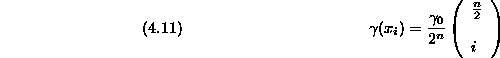
As n grows large, the DeMoivre-Laplace Theorem asserts that this distribution will approach an exponential distribution relatively quickly [7]. Applying Equations (4.3) and (4.6),
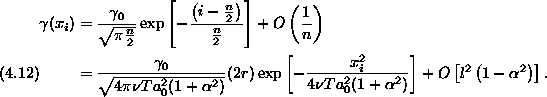
This expression is bounded in the limit as  and
because
and
because
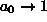
.Thus, the cumulative effect of the refinement error, e, is a Riemann sum of a convolution:
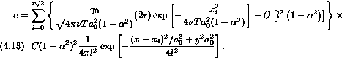
Evaluating the convolution yields
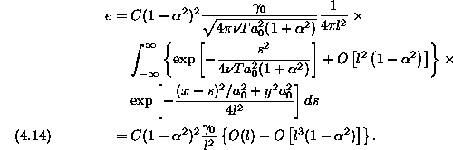
The second term is of higher order and shall be discarded at this point. The ratio
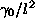
is often discussed in the literature because it represents how much computational elements overlap one another. If one presumes that circulations are determined based on an area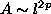
, then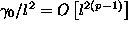
. Many investigators choose p=1/2 [3, 10]. In this case, it is most appropriate to choose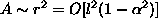
. Wrapping this analysis into one statement, we have
This result allows one to choose values of  and l to control one
source of error in a simulation. The only other source of error comes from the
spatial discretization and dynamics, discussed in the previous section, so
now we have bounded the total error induced by the ECCSVM approximation.
and l to control one
source of error in a simulation. The only other source of error comes from the
spatial discretization and dynamics, discussed in the previous section, so
now we have bounded the total error induced by the ECCSVM approximation.